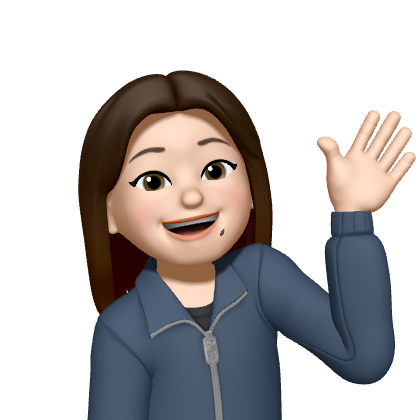

보통 소개에는 어떤 말이 들어가야 할까요? 지금 잠이 많이 옵니다. Alt+Tab을 누르면서 작업을 많이 하는데 아주 번거롭습니다. 자취생인데 투컴을 쓰지 않는 바보가 여기 있답니다. 하루빨리 모니터를 하나 더 사야겠습니다. 네, 이 말도 자취 처음 시작했을 때부터 했답니다. 저는 이처럼 귀찮음이 많은 사람입니다. 근데 처음 만나는 사람 대부분은 제가 J인줄 압니다. 그만큼 제가 이미지 메이킹을 잘했다는 거겠죠? 하핫.. 저는 내유외강입니다. 다들 제가 털털하고 쿨하고 강한 거처럼 보인다고 하는데... 아 아니라고요? 알겠습니다 여기까지만 말하도록 하죠. 저는 대학교에서 무슨 짓을 하고 있을까요? 3학년 현재 기준으로 대충 나열하자면 컴학 전공은 운영체제, 논리회로, 컴퓨터학개론 듣고 전자과 전공으로 마이크로프로세서, 신호 및 시스템 듣고 있습니다. 기벤창이 전공이었나.. 교양이었나.. 모르겠지만 어쨋든 이렇게 총 18학점 이수하고 있습니다. 왜 전자과 전공을 듣냐고요? 제가 전자과 부전공을 하고 있거든요. 사실 부전공 컴학으로 다 채울 수 있는데 저는 DGM 융합인재 DNA 트랙 이수 중이라서 뭐 정해진 과목 중 몇개를 들어야 한다네요. 그래서 아주 힘들게 전자과 전공을 듣고 있습니다. 동아리는 L&C, 해달, GETIT하고 있고, 에랜씨에서 아주 많은 일을 하고 있습니다.. 너무 일이 많아서 그만두고 싶다는 생각을 많이 합니다.. 그래도 1학년 때부터 아주 얻어가는 게 많은 동아리였어요. 항상 베풀자는 마음으로 열심히 하고 있습니다.!! L&C 파이팅~!!!!!! 대외활동으로 H-점프스쿨 하고 있는데 이것도 참 쉽지 않네요. 아동센터가서 애들 보느랴.. 소그룹 멘토링 듣느랴.. 활동 보고서 작성하느랴.. 등등등 그래도 우수장학샘 되기 위해서 많이 노력하고 있습니다. 이 외에도 자잘한 거 많이 적을 수 있긴한데 이제 쓰기 귀찮네요. 분량도 이 정도면 괜찮겠죠? 마지막으로 제 꿈을 이야기하자면 재밌는 사람과 재밌게 사는 거 입니다. 사는 게 재밌어야 살 맛나지 않을까요? 어쨌든 그렇게 살 수 있는 하루하루를 만들려고 노력하고 있습니다~ 끝.
